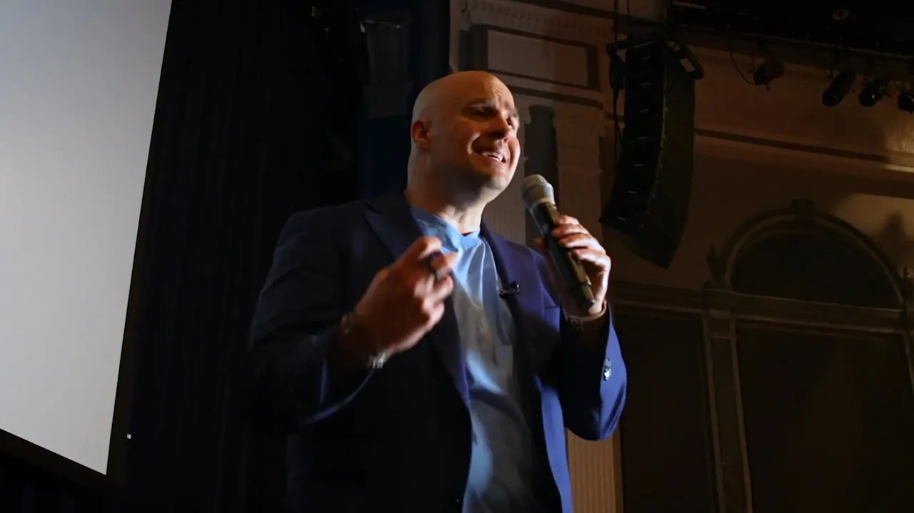

A talk about the part people don’t say out loud.
0 keynotes. 0 leaders in those rooms. 0 years inside the relationships people care about most.
What he talks about.
You can be surrounded by colleagues and still on your own.
You’re doing the job well and struggling quietly underneath it.
You carry everyone else’s feelings and nobody asks about yours.
There’s a conversation you keep moving to next week.
Small unsaid tensions add up until everyone is tired.
By the time an organization sees this, it looks like friction nobody named, people leaving, teams out of step and good people worn down.
- You can be surrounded by colleagues and still on your own.
- You’re doing the job well and struggling quietly underneath it.
- You carry everyone else’s feelings and nobody asks about yours.
- There’s a conversation you keep moving to next week.
- Small unsaid tensions add up until everyone is tired.
By the time an organization sees this, it looks like friction nobody named, people leaving, teams out of step and good people worn down.
Three talks, for people, teams and organizations.
Lead Human™
Relational Intelligence at Work.
- Spot the relational patterns behind engagement and retention.
- Work from a clear framework for building trust.
- Name tension and misalignment early, before performance dips.
Invisible Friction
Why teams break down.
- Notice the quiet breakdowns wearing on culture and collaboration.
- Open a difficult conversation without making it worse.
- Build accountability that doesn’t cost trust.
The Hidden Multiplier
What relational intelligence does to retention.
- Connect everyday relational patterns to the outcomes an organization already measures.
- Look at turnover as a trust question.
- Protect culture through growth and change.
What it’s like in the room.
ThinkYou start auditing your own conversations while he’s still talking.
FeelSomething lands that you recognise from home as much as work.
ToolsYou walk out with a few moves you can try in the morning.
What the room walks out with.
-
Disconnection becomes Trust
-
Avoidance becomes Honest conversation
-
Assumption becomes Curiosity
-
Carrying it alone becomes Shared responsibility
-
Silence becomes Openness
Rooms he speaks to.
- Executive and senior teams
- Managers and emerging leaders
- Teams under strain
- Associations and membership bodies
- People, culture and L&D teams
- Healthcare and long-term care
Available as a keynote, a workshop or a half-day session, for teams, conferences, associations and healthcare organizations.
For planners.
Tailoring
Every planner resource comes in more than one version. Bios run from one sentence to a short paragraph, and Stephen’s team will build one to your event theme on request.
On the day
- A wireless headset mic. Stephen moves and works the room. A lavalier can stand in.
- A sound system matched to the room size.
- Fresh batteries, please. We like the energy on stage and no surprises.
- Projection and screens every seat can read, HDMI to Stephen’s laptop, and at least one confidence monitor at the foot of the stage.
- A countdown timer he can see, and 30 minutes of soundcheck in the room before doors open.
Twenty years as a therapist, sexologist and researcher taught Stephen what holds people together, and he has been taking it to stages since 2004.
Meet Stephen